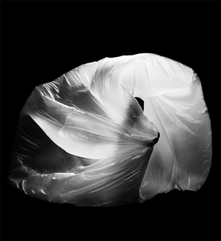

Irene Hsiao: Mond(e): 月亮代表我的心
Free; RSVP required
CLICK HERE
Chicago-based artist Irene Hsiao presents 氣, a piece developed for performances across the Chicago Architecture Biennial and part of Hsiao’s project Mond(e): 月亮代表我的心, named for the Taiwanese love song “The moon represents my heart.” In 氣, Hsiao performs in response to a sculpture by artist and fellow Biennial participant Dominic Kießling, accompanied by soprano Mickey Farès. Inspired by the shifting phases of the moon and the impermanence of architecture and anatomy, the work explores the interplay of air and energy—氣 (qi)—as Kießling’s sculpture receives, amplifies, and returns each movement and emotion in a cycle of mutual transformation. Mond(e): 月亮代表我的心 – 氣 was developed at the Graham Foundation in fall 2025 for presentations at the Narrow Bridge Arts Club and the Driehaus Museum and Hsiao returns to the Madlener House for the closing presentation.
Mond(e): 月亮代表我的心 is a year-long performance and community art project developed through Hsiao’s 2025 residency at Hyde Park Art Center, creating site-specific performances with new collaborators that evolve in reference to the moon’s periodic phases and its influence. This program is partially supported by an Individual Artists Program Grant from the City of Chicago Department of Cultural Affairs and Special Events, as well as a grant from the Illinois Arts Council, a state agency, from federal funds through the National Endowment for the Arts.
Irene Hsiao creates dance and performance through object-driven inquiry with museum spaces, exhibitions, and artworks. She is the inaugural Artist in Residence at the Smart Museum, first Artist in Residence at 21c Museum Hotel Chicago, first Resident Artist at the Heritage Museum of Asian Art, a Radicle Resident at Hyde Park Art Center, and the first artist in residence at the Chinese Fine Arts Society.
Dominic Kießling is a visual artist whose practice transforms lightweight materials into large-scale kinetic installations animated by fans, hair dryers, or human performance. Born in Dresden in 1984, he studied industrial design before working for a decade in motion and stage design in Berlin. In 2019, he returned to Dresden to focus on analogue art, experimenting with everyday materials and immersive sculptural forms. In 2023, he established his studio in a former factory building to pursue one of his most ambitious projects. Starting with little more than plastic bags and a hair dryer, Kießling developed a dynamic aesthetic that blurs the line between object and organism. His work continues to explore themes of transformation, movement, and material tension.
Mickey Farès is a Chicago-based soprano and improviser with a rich cultural heritage rooted in Venezuela, Spain, and Lebanon. Trained in classical opera performance, her vocal practice explores the full elasticity of the human voice—stretching its expressive limits and weaving together a diverse range of sonic textures. Her improvisational style draws on the raw spontaneity of free jazz and the rich emotionality of Spanish folkloric singing, creating a unique and deeply embodied sound language. Collaborating with movement artists has become central to her work, where the interplay of physical and vocal expression allows for a dynamic exchange of energy between performers. At the heart of her artistic process is a commitment to shared energy—how it is passed, shaped, and amplified among collaborators. For Mickey, improvisation is a playground for presence, curiosity, and connection.